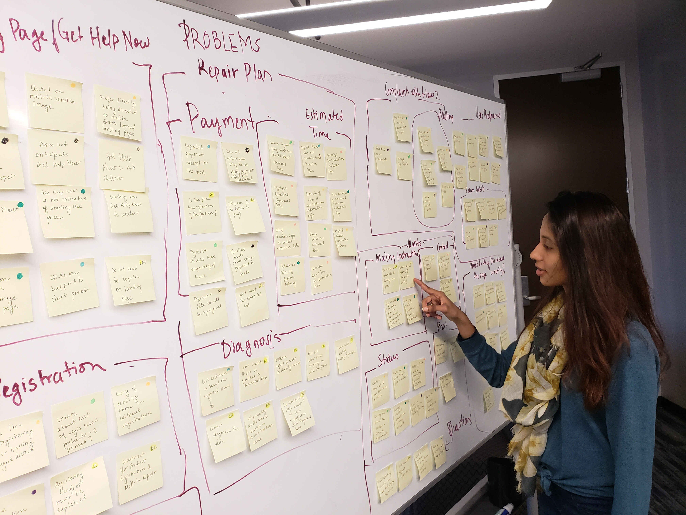
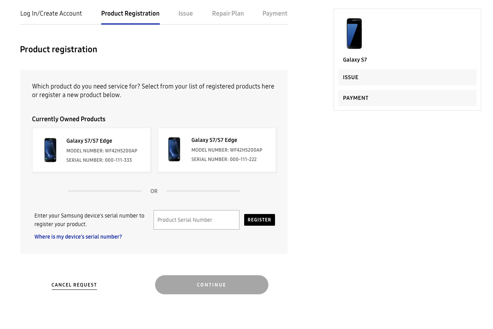
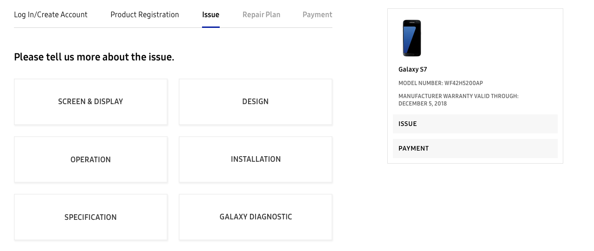
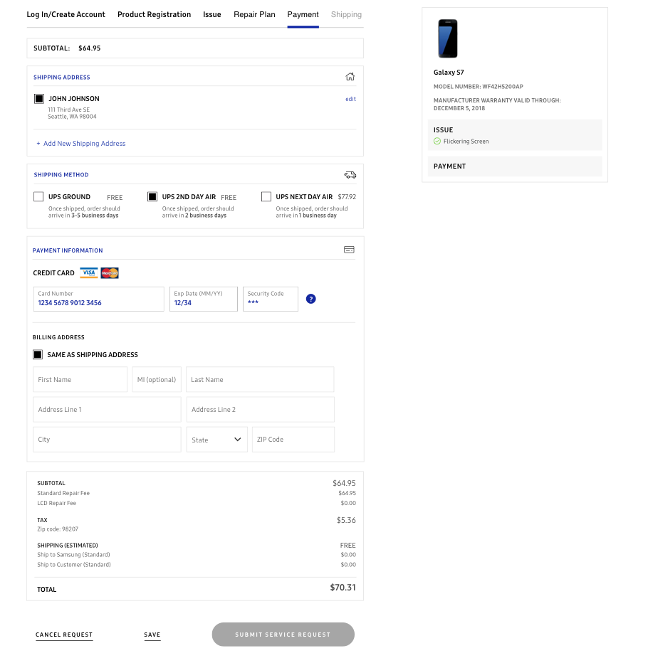

I began by analyzing 20 usability tests from participants on UserTesting.com. These A/B tested a previously developed version of the prototype. I also conducted talk-aloud usability tests with 5 of my co-workers. The insights I derived from these user tests were then distilled using an affinity map.

These were some of the insights gathered from the affinity mapping.

Landing Page
- User does not know where to start on the landing page - A few clicked on the mail- in repair image or support tab ( 3 users)
- User does not associate “Get Help Now” with starting the mail - in repair (7 users)
- They would prefer to directed directly to the mail-in process from the landing page ( 2 users)

Registration
- Most users understand the need for a registration page, however they are unsure of the benefits they receive from the registration
- They experience a disconnect between the landing page and the registration page
- They would prefer to directed directly to the mail-in process from the landing page

Issue
- Users experience a lack of confidence in diagnosing the issue and troubleshooting

Repair Plan
- Users are unsure of the costs. They question if the costs are associated with the issue diagnosis.
- Users want to see the estimated time of return

Payment
- Users do not understand why they are being asked to pay when the service has not been confirmed.
What do users currently like about the page?
- Ability to opt-in to mailing updates
- Step format in troubleshooting
- Not being redirected to a third party website for tracking status
- Apologetic tone
- Breadcrumb navigation
- Information tooltips
- Not having to talk to customer support
What do the users want?
- Specific information relating to service center address
- Detailed information about packaging
- Ability to print the mailing label
- More clear status descriptions
What are the general user preferences/habits?
- They do not like scrolling
- Users want to be able to do things at their own time and convenience
- Users do not prefer talking on the phone to customer service
- Users want more clear status descriptions